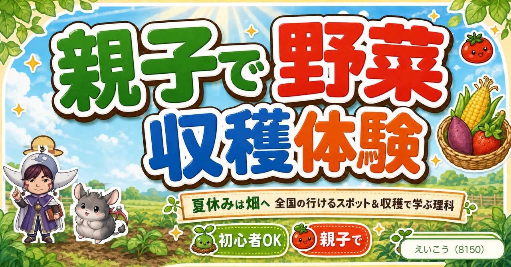
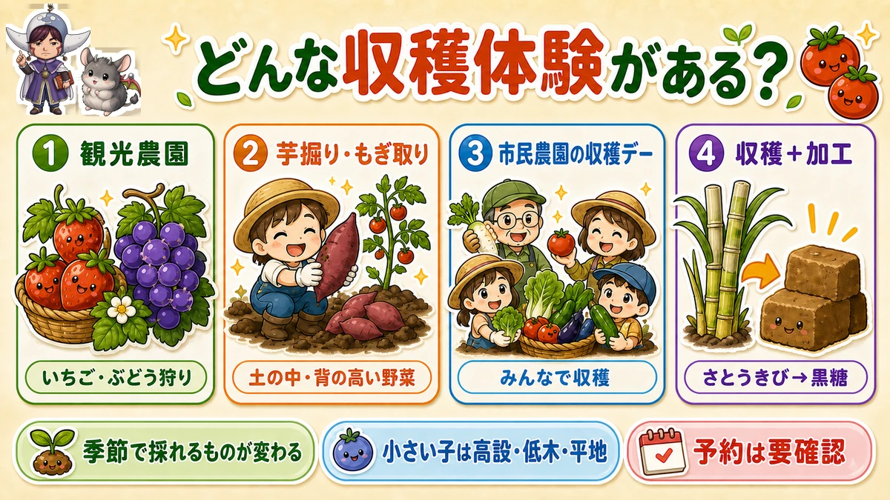
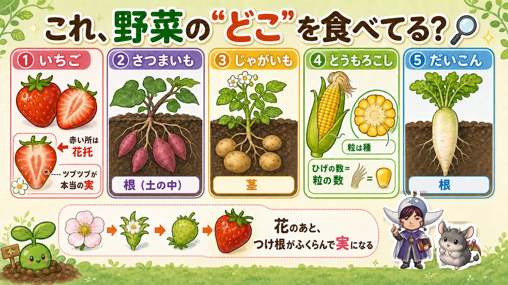

親子で野菜の収穫体験｜種類と選び方・探し方・持ち物・その場でできる観察

🗨️「家庭菜園、気になるけど何から始めれば…」
🗨️「夏休み、子どもとどこ行こう？」
🗨️「野菜がどう実るのか、実物を見せてあげたい」
どうも、8150（えいこう）です🌱 家庭菜園歴8年、有機・無農薬でやってる、野菜と理科が好きな人間です。
いつもは「育てる」話ですが、今日はちょっと寄り道。“畑に行く”話をします。
じつは、まだ家庭菜園を始めていない人こそ、収穫体験がいちばんの入口なんです。土も道具もいらない、失敗もない。その日に採れた野菜を持って帰れて、子どもは「野菜ってこうやってできるんだ！」と目を輝かせる。夏休みにぴったりですよ☺️
📖 この記事の目次
この記事で分かること
- 家庭菜園を始める前に、まずは収穫体験で「採る楽しさ」を味わうのも、すてきな入口です。
- 収穫体験には、土を掘る（じゃがいも・さつまいも）、もぎ取る（とうもろこし・トマト）、摘み取る（いちご・葉物）など、いろいろな種類があります。
- 季節によって、体験できる野菜が変わります。ただし、地域や年によって時期は前後します。
- 体験先は、地域の観光協会、農協、自治体、市民農園などの情報から探せます。予約や料金、服装の決まりは事前に確かめます。
- 収穫しながら、「この野菜はどこを食べているのかな」「花のあとにどうやって実ができるのかな」と観察すると、ぐっと学びが深まります。
- 気に入った野菜があったら、次は「育てる」に挑戦してみましょう。
「子どもに野菜をもっと好きになってほしい」「土にふれる体験をさせてあげたい」。そう思っても、いきなり家庭菜園を始めるのは、ちょっとハードルが高いですよね。
そんなときにおすすめなのが、収穫体験です。畑に出かけて、自分の手で野菜を採る。それだけで、スーパーで見る野菜が、ぐっと身近なものに変わります。
この記事では、収穫体験の種類と選び方、近くの体験先の探し方、持ち物、そして収穫しながら親子で楽しめる観察のポイントまで、順番に書いていきます。

早見：収穫体験の基本（ひと目で分かる目安）
体験の種類
- 掘る：じゃがいも、さつまいも、落花生、にんじん、大根
- もぎ取る：とうもろこし、トマト、きゅうり、なす、ピーマン
- 摘み取る：いちご、ブルーベリー、葉物（春菊、小松菜など）
- 切る：キャベツ、白菜、ブロッコリー、かぼちゃ
- 拾う：くり
季節のおおよその目安
- 春（3〜5月）：いちご、たけのこ、玉ねぎ
- 初夏（6〜7月）：じゃがいも、とうもろこし、枝豆、トマト、ブルーベリー
- 夏（7〜8月）：とうもろこし、夏野菜、ぶどう、桃
- 秋（9〜11月）：さつまいも、落花生、くり、りんご
- 冬（12〜2月）：大根、白菜、キャベツ、いちご（ハウス）
地域や品種、その年の天気によって、時期は前後します。出かける前に、必ず体験先で確かめてください。
事前に確かめること
- 予約がいるか
- 料金（入園料、量り売り、持ち帰りの量の決まり）
- 年齢の制限
- 服装、靴の決まり
- 道具（スコップ、はさみ、袋）を貸してもらえるか
- 雨の日はどうなるか
- トイレや手洗い場の有無
作業の手順
ここからは、収穫体験に出かけるまでの準備と、当日の流れを、順番に書いていきます。
手順1：どんな体験をしたいか決める
収穫体験と一口に言っても、いろいろあります。
- 土を掘る体験：じゃがいもやさつまいも。土の中から、ごろごろと芋が出てくる瞬間は、子どもも大人も夢中になります。宝探しのような楽しさがあります
- もぎ取る体験：とうもろこしやトマト。背の高いとうもろこしの林の中で、実を探してもぎ取るのは、小さな子にはちょっとした冒険です
- 摘み取る体験：いちごやブルーベリー。赤く熟した実を探して摘むのは、小さな子でも楽しめます
- 切る体験：キャベツや白菜。大きな野菜を、包丁やはさみで根元から切り取ります。大人が手伝いながら
子どもの年齢や、好きな野菜、出かけたい季節に合わせて選んでみてください。初めてなら、芋掘りやいちご摘みのように、小さな子でも参加しやすいものがおすすめです。
手順2：近くの体験先を探す
収穫体験ができる場所は、意外と身近にあります。
- 観光農園：いちご狩り、ぶどう狩り、芋掘りなど。季節ごとに受け入れている
- 農協や農産物の直売所：地域の農家さんと一緒に、収穫体験の催しをしていることがある
- 自治体や観光協会：地域の農業体験の情報をまとめていることが多い
- 市民農園や体験農園：収穫体験会や、親子向けの催しを開いていることがある
- 幼稚園や学校の行事：芋掘り遠足など
探すときは、「地域名」と「収穫体験」「芋掘り」「いちご狩り」などを組み合わせて調べると見つけやすいです。自治体や観光協会のホームページには、地元の農園をまとめた一覧が載っていることもあります。
体験先の情報は、年によって変わることがあります。営業しているか、受け入れをしているかは、出かける前に必ず確かめてください。
手順3：予約と決まりを確かめる
体験先が決まったら、次のことを確かめます。
- 予約がいるか。人気の時期は、早めに埋まることがある
- 料金のしくみ。入園料だけか、採った量で払うのか、持ち帰れる量に決まりがあるのか
- 子どもの年齢による料金や、参加できる年齢
- 道具を借りられるか、持っていく必要があるか
- 雨の日に中止になるか、ハウスの中でできるか
- その場で食べてもいいか（いちご狩りなどは、食べ放題の時間が決まっていることも）
畑は、農家さんが大切に育てている場所です。決まりを守って、気持ちよく楽しみましょう。
手順4：服装と持ち物をそろえる
- 服装：汚れてもいい服。長袖・長ズボンだと、虫刺されや日焼け、葉で肌を切るのを防げる
- 靴：長靴か、汚れてもいい運動靴。畑の土はやわらかく、ぬかるんでいることもある
- 帽子：日差しよけに
- 軍手：芋掘りや、とげのある野菜をさわるときに
- 持ち帰り用の袋や箱：体験先で用意されていないこともある
- タオル、着替え、ウェットティッシュ
- 飲み物：夏は特にこまめに水分を
- 虫よけ、日焼け止め
芋掘りは、思っている以上に泥だらけになります。帰りの車のシートを汚さないように、着替えとビニール袋も持っていくと安心です。
手順5：当日、畑のルールを聞く
畑に着いたら、まず農家さんやスタッフの説明をよく聞きましょう。
- どこからどこまで採っていいか
- どんな大きさのものを採ればいいか
- 採り方（引っぱるのか、ひねるのか、はさみで切るのか）
- 入ってはいけない場所
子どもと一緒に聞いて、「どうやって採るんだって？」と確かめ合うと、子どもも集中して聞いてくれます。
手順6：採り方のこつ
- じゃがいも：茎の根元を持って、ゆっくり引き抜く。土の中に残った芋は、手やスコップでやさしく掘り出す。スコップを茎のすぐ近くに差すと芋を傷つけるので、少し離れたところから
- さつまいも：つるを取りのぞいてから、株のまわりの土を手で少しずつ掘っていく。芋は意外と深く、横にも広がっている
- とうもろこし：実の根元を持って、下に向かってぐっと折るようにもぎ取る
- トマト：へたの上の節のところで、指でぽきっと折るか、はさみで切る
- いちご：へたのすぐ上の茎を、指でつまんでひねるように摘む。実を強くつかむとつぶれてしまう
小さな子どもには、大人が見本を見せてから、一緒にやってみるのがおすすめです。
手順7：持ち帰ったあと
採った野菜は、種類によって扱いが違います。
- じゃがいも：土がついたまま、日の当たらない場所で乾かす。光に当てると緑色になってしまう
- さつまいも：すぐより、しばらく置いたほうが甘くなると言われる
- とうもろこし：採ったらすぐに食べるのがいちばん。時間がたつほど甘みが落ちる。すぐ食べないなら、ゆでて冷やしておく
- いちご：傷みやすいので、その日のうちに
- にんにく・玉ねぎ：洗わずに、風通しのよい場所で乾かして保存
家に帰ったら、採った野菜で一緒に料理をしてみてください。自分で採った野菜は、きっと格別の味です。
野菜ごとの収穫体験ガイド
じゃがいも掘り
初夏（地域によって6〜7月ごろ）が中心です。春に植えたじゃがいもの葉や茎が黄色く枯れてきたら、収穫の合図です。
茎を持って引き抜くと、根元にじゃがいもがいくつもついてきます。土の中にも残っているので、手で探るように掘ってみてください。1株から、思っていたよりたくさんの芋が出てきて驚くはずです。
掘るときに、スコップを茎のすぐそばに差しこむと、芋を傷つけてしまいます。株から少し離れたところに差しこんで、土ごと持ち上げるようにすると、きれいに掘り出せます。
さつまいも掘り
秋（9〜11月ごろ）が中心です。幼稚園の芋掘り遠足でもおなじみですね。
さつまいもは、つるが地面をはうように広がっています。まずはつるを取りのぞいてから、株のまわりを掘っていきます。芋は、じゃがいもより深く、横にも長く伸びているので、途中で折らないように、まわりの土を少しずつ手でどけていくのがこつです。
長いさつまいもを、折らずに丸ごと掘り出せたときの達成感は、格別ですよ。親子で歓声が上がる瞬間です。
とうもろこし狩り
夏（6〜8月ごろ）が中心です。背の高いとうもろこしの畑は、子どもにとってはちょっとした迷路のようです。
実の先から出ているひげが茶色くなっていたら、食べごろのサイン。実の根元を持って、下に向かってぐっと折るともぎ取れます。
採ったばかりのとうもろこしは、とても甘いので、できればその日のうちに食べてください。
いちご狩り
冬から春（12〜5月ごろ）が中心です。ハウスで育てているところが多いので、雨の日でも楽しめることが多いです。
赤く熟したいちごを探して、へたの上の茎を指でつまんで、ひねるように摘みます。いちごは、へたの近くまで赤くなっているものが食べごろです。
小さな子でも参加しやすく、初めての収穫体験にもおすすめです。
落花生掘り
秋（9〜10月ごろ）が中心です。
落花生は、花が咲いたあと、花の付け根から細い茎が伸びて、地面の中にもぐりこみ、土の中で実（さや）ができる、ふしぎな野菜です。株を引き抜くと、根元にさやがたくさんついてきます。
掘りたての落花生を塩ゆでにすると、炒ったものとはまた違う、ほくほくした味わいが楽しめます。
ブルーベリー摘み
夏（6〜8月ごろ）が中心です。低い木になる小さな実を、1粒ずつ摘んでいきます。
実が青紫色に色づいて、軸のところまで色が回っているものが食べごろです。指で軽くさわって、ころっと落ちるものが熟しています。小さな子も、手の届く高さで楽しめます。
枝豆狩り
夏（6〜8月ごろ）が中心です。さやがふっくらとふくらんで、指で押すと中の豆が出てきそうなくらいが食べごろです。
株ごと引き抜くか、さやを1つずつはさみで切って収穫します。枝豆も、採ってから時間がたつほど甘みが落ちていくので、持ち帰ったらすぐにゆでるのがおすすめです。
トマトやきゅうりなどの夏野菜
夏（7〜8月ごろ）は、トマト、ミニトマト、きゅうり、なす、ピーマンなどの夏野菜の収穫体験もあります。
ミニトマトは、赤くなった実を、へたの上の節のところで指でぽきっと折って摘みます。きゅうりやなすは、とげや茎がかたいので、はさみで切るのが安全です。きゅうりは、あっという間に大きくなるので、ちょうどいい大きさのものを探すのも、宝探しのような楽しさがあります。
玉ねぎ抜き
初夏（5〜6月ごろ）が中心です。玉ねぎの葉が倒れてきたら収穫のサイン。葉の付け根を持って、そのまま引き抜きます。
土の中から、まるい玉ねぎがすぽっと出てくる感覚は、子どもにも楽しい体験です。
大根抜き
冬（11〜1月ごろ）が中心です。
大根は、葉の付け根を持って、まっすぐ上に引き抜きます。大きな大根は、子どもの力ではなかなか抜けないこともあります。親子で一緒に「うんとこしょ」と引っぱるのも楽しい思い出になります。斜めに引っぱると途中で折れてしまうので、まっすぐ上に引くのがこつです。
年齢に合わせた楽しみ方
2〜3歳ごろ
いちご摘みやブルーベリー摘みのように、手の届く高さで、つまむだけで採れるものがおすすめです。芋掘りなら、大人が土をゆるめておいて、最後に芋を引っぱり出すところだけを任せてあげると、「自分で採れた」という喜びを味わえます。
4〜6歳ごろ
芋掘りやとうもろこし狩りも、一人で楽しめるようになってきます。「赤いのを探してね」「ひげが茶色いのが食べごろだよ」と、目印を伝えて、自分で選ばせてあげてください。
小学生
採り方のこつを自分で考えたり、採った量を数えたり、重さを比べたりと、観察や記録を楽しめる年ごろです。この記事の「収穫しながらできる観察」を、自由研究のテーマにしてみるのもおすすめです。
体験先を選ぶときのポイント
- 家からの近さ：小さな子と一緒なら、移動に時間がかかりすぎないところがおすすめです
- トイレと手洗い場：畑の中にない場合もあるので、事前に確かめておくと安心です
- 日陰や休憩所：夏は特に、休める場所があるかどうかが大切です
- 体験の時間：小さな子は長時間だと疲れてしまうので、短めの体験から
- 説明やサポート：初めてなら、採り方を教えてくれる体験先が安心です
口コミや写真を見て、雰囲気を確かめてから選ぶのもいいと思います。
暑い日・雨の日の工夫
暑い日
夏の収穫体験は、できるだけ朝の涼しい時間に予約するのがおすすめです。とうもろこしは朝に採ったものがいちばん甘いとも言われるので、一石二鳥です。
凍らせたペットボトルの飲み物や、首に巻く冷たいタオルがあると、暑さがだいぶやわらぎます。日焼け止めも忘れずに。子どもは夢中になると水を飲むのを忘れがちなので、時間を決めて声をかけてください。
雨の日
いちご狩りなど、ハウスの中の体験なら雨でも楽しめます。畑での体験は、雨の日は中止になったり、ぬかるんで歩きにくくなったりします。雨具と長靴、着替えを多めに持っていきましょう。雨上がりの畑は、土がやわらかくなっていて、芋が掘りやすいこともあります。
安全に楽しむための注意
- 熱中症：夏の畑は、日差しをさえぎるものが少なく、とても暑くなります。帽子をかぶり、こまめに水分と休憩をとってください
- 虫刺され：長袖・長ズボンで、虫よけも使います。ハチを見かけたら、手で払わずに静かに離れます
- 道具：スコップやはさみは、大人が見ている中で使います。使わないときは、刃先を下に向けて置きます
- 手洗い：畑の土をさわったあとや、食べる前には、必ず手を洗います
- 足もと：畑は、でこぼこやぬかるみがあります。走り回らないように声をかけてください
収穫しながらできる観察
収穫体験は、野菜のしくみを知るチャンスでもあります。親子で、こんなことを観察してみてください。

この野菜は、どこを食べている？
野菜によって、食べている部分が違います。
- じゃがいも：土の中の「茎」がふくらんだもの。芽が出るくぼみがあるのが、茎のしるし
- さつまいも：土の中の「根」がふくらんだもの
- にんじん・大根：根（大根は、上の方は茎の部分も含む）
- とうもろこし：たくさんの「種」が集まったもの
- いちご：赤い部分は、花の付け根がふくらんだもの。表面のつぶつぶの1つ1つが、実のなかま
- キャベツ・白菜：葉
- ブロッコリー：花のつぼみ
「じゃがいもとさつまいも、同じ芋なのに、食べているところが違うんだって！」と話してみると、子どもの目が輝きますよ。
じゃがいもの芽を探してみる
じゃがいもの表面には、小さなくぼみがあります。これが芽の出るところです。茎がふくらんだものだから、芽があるんですね。
一方、さつまいもは根なので、じゃがいものようなくぼみはありません。2つを並べて、違いを探してみてください。
緑色のじゃがいもに注意
土から顔を出して、日に当たったじゃがいもは、皮が緑色になることがあります。緑色の部分には、体によくない成分が多く含まれているので、食べないほうがいいと言われます。
赤や紫の皮のじゃがいもは、もともとそういう色の品種なので、心配いりません。緑色と、品種の色は区別して見てください。
とうもろこしのひげは、何本ある？
とうもろこしの皮をむくと、先から茶色いひげがたくさん出ています。このひげの1本1本は、実の1粒1粒につながっています。
とうもろこしは、風で花粉を運ぶ植物です。てっぺんの穂（雄花）から花粉が飛んで、ひげ（雌花）について、初めて粒が育ちます。ひげに花粉がつかなかった粒は、ふくらまずに小さいまま残ります。粒がまばらなとうもろこしを見つけたら、「このひげには花粉がつかなかったのかもね」と話してみてください。
花から実へのつながり
トマト、なす、きゅうり、オクラなどは、花が咲いたあとに、その付け根がふくらんで実になります。
畑で、花と、小さな実と、大きな実を見比べてみてください。「この花が、あとでこの実になるんだね」と、順番に並べて見られることがあります。オクラは、花が咲いてから数日で、食べごろの実になります。
土の中が見えないから、試し掘り
芋は土の中で育つので、外から見ても大きさが分かりません。農家さんは、何株か試しに掘ってみて、芋の大きさを確かめてから収穫の時期を決めることがあります。
地上の葉が元気に茂っているあいだは、葉で作った栄養が土の中の芋に送られて、芋が大きくなっていきます。葉と芋がつながっていることを、掘りながら話してみてください。
スイカやかぼちゃの食べごろは？
スイカは、叩いた音で食べごろを見分ける、という話がよくあります。でも、音だけで決めるのはむずかしく、農家さんは、つるの巻きひげの枯れ具合、表面のもようやつや、育った日数など、いくつもの目安を組み合わせています。
かぼちゃも、へたが乾いてひびが入っているか、皮のつやはどうか、などを見て判断します。採ってすぐより、しばらく置いたほうが甘くなる野菜もあります。
体験のあとの楽しみ
収穫体験は、家に帰ってからも楽しめます。
- 採った野菜で一緒に料理をする：じゃがいもならふかし芋、とうもろこしならゆでるだけ、など簡単なものから
- 絵日記や観察ノートをつける：どんな野菜を、どうやって採ったか、どこを食べているか
- 写真を見返す：採った野菜と一緒に撮った写真は、いい思い出になります
- 野菜の育ち方を本や図鑑で調べてみる
「また行きたい」「今度は育ててみたい」という言葉が出てきたら、それは野菜が好きになり始めたしるしかもしれません。
失敗の見分け方
思ったより採れなかった
収穫体験は、天気や畑の状態に左右されます。その年の天気によって、実のつき方や芋の大きさは変わります。たくさん採れなくても、「土の中から芋が出てきた」という体験そのものが、子どもにとっては大切な思い出になります。
子どもが途中で飽きてしまった
小さな子どもは、集中が続かないこともあります。無理に最後まで採らせようとせず、畑の虫を見つけたり、土をさわったりする時間も楽しんでください。それも立派な体験です。
持ち帰った野菜がすぐに傷んだ
- とうもろこしを常温で置いておいた：甘みがどんどん落ちます。すぐにゆでるか、冷やします
- じゃがいもを明るい場所に置いた：緑色になります。暗い場所で保存します
- いちごを洗ってから保存した：傷みやすくなります。食べる直前に洗います
服や靴が泥だらけになった
芋掘りは、どうしても汚れます。泥汚れは、乾いてからはたき落とすと落ちやすくなります。汚れてもいい服で出かけるのが、いちばんの対策です。
説明が分かれていること
掘ったじゃがいもは、どれくらい乾かすか
- 畑で1時間くらい乾かす、という説明
- 30分くらい乾かす、という説明
畑で表面を乾かす時間と、持ち帰ってから保存の前に乾かす時間は、別の段階です。体験先の指示に従ってください。家では、日の当たらない場所で表面の土が乾くまで置いておけば十分です。
とうもろこしは、いつ採るのがいいか
- 朝の早い時間に採って、すぐに食べるか冷やすのがいちばん。時間がたつほど味が落ちる、という説明
体験の時間は施設によって決まっているので、採ったらなるべく早く食べる、と覚えておけば大丈夫です。
とうもろこしの品種を混ぜて植えると
- 違う品種の花粉がかかると、粒の色や味が変わる。なるべく1種類にしぼる、という説明
- 黄色いふつうの品種どうしなら、そこまで神経質にならなくていい、という説明
収穫体験の畑で、黄色と白の粒がまざったとうもろこしを見つけたら、「となりの品種の花粉がかかったのかもしれないね」と話すきっかけになります。ただ、もともと色がまざる品種もあるので、色だけで決めつけることはできません。
よくある質問
Q. 何歳くらいから楽しめますか？
A. 歩けるようになれば、いちご摘みや芋掘りは楽しめることが多いです。小さいうちは、採ることよりも、土をさわったり、虫を見つけたり、畑を歩いたりすること自体が楽しい体験になります。ただ、体験先によって参加できる年齢が決まっていることもあるので、事前に確かめてください。小さな子は、大人がそばについて、一緒に採ってあげてください。
Q. 雨の日はどうなりますか？
A. 体験先によって違います。中止になるところ、ハウスの中で続けるところ、日をずらせるところなどがあります。天気が心配な日は、前日か当日の朝に問い合わせておくと安心です。雨のあとは畑がぬかるんでいることもあるので、長靴があると安心です。
Q. 採った野菜を、その場で食べてもいいですか？
A. いちご狩りのように、その場で食べるのが前提の体験もあれば、持ち帰りだけの体験もあります。農家さんに確かめてから食べてください。生で食べる場合は、手を洗ってから、洗える場所で洗って食べるのが安心です。
Q. 野菜が苦手な子でも楽しめますか？
A. 楽しめます。自分で採った野菜は、いつもと違って見えるものです。無理に食べさせる必要はありません。「これ、自分で採ったんだよね」と話しながら、一口だけでも味見してみる。そんな小さな一歩が、野菜との距離を縮めてくれることがあります。食べなくても、採る体験そのものが大切な思い出です。採る楽しさ、土にふれる楽しさを味わうだけでも、野菜との距離はぐっと縮まります。
Q. 畑で虫を見つけたら、どうすればいいですか？
A. 畑には、いろいろな虫がいます。てんとう虫やちょうちょ、だんごむしなど、子どもにとっては楽しい発見です。ただ、ハチや毛虫など、刺す虫もいるので、知らない虫にはさわらないように伝えておきましょう。
Q. 車がなくても行けますか？
A. 駅やバス停から歩いて行ける体験農園もあります。ただ、採った野菜を持ち帰るので、量が多くなると大変です。電車やバスで行く場合は、持ち帰れる量を考えて、リュックや丈夫な袋を用意しておくと安心です。
Q. 料金はどれくらいかかりますか？
A. 体験先によって、入園料だけのところ、採った量の重さで払うところ、1株いくらと決まっているところなど、さまざまです。持ち帰りの量に決まりがあることもあるので、事前に確かめてください。
Q. アレルギーが心配です
A. 野菜や果物によっては、さわったり食べたりすることでかゆみなどが出る場合があります。心配な場合は、その場で食べるのは控えて、手袋をして収穫するなどの工夫をしてください。
Q. 体験の前に、家でできることはありますか？
A. 野菜の絵本や図鑑を一緒に見て、「じゃがいもは土の中にできるんだって」「とうもろこしにはひげがあるんだって」と話しておくと、当日の発見がぐっと楽しくなります。スーパーで、これから採りに行く野菜を見ておくのもいいですね。畑で見る姿との違いに、きっと驚くはずです。
Q. きょうだいで年齢が離れていても楽しめますか？
A. 楽しめます。上の子には採り方を考えたり、採った数を数えたりする役目を、下の子には、上の子が見つけた野菜を一緒に引っぱる役目を、というように、それぞれにできることを任せてあげると、みんなで楽しめます。上の子が下の子に教えてあげる姿が見られるのも、収穫体験のうれしいところです。
Q. 収穫体験のあと、家でも野菜を育てられますか？
A. もちろんです。体験で気に入った野菜があれば、プランターから始めてみてください。収穫体験で「採る楽しさ」を知った子どもは、「種をまいて、芽が出て、大きくなる」過程も、きっと楽しんでくれるはずです。ミニトマト、ラディッシュ、葉物などは、プランターでも育てやすい野菜です。
学ぶ🔬 なぜ収穫体験が、野菜を好きになるきっかけになるのか
ここからは、収穫体験と野菜のしくみについて、少しだけ深く書いておきます。読み飛ばしても大丈夫です。
野菜が「どこから来るか」が分かる
ふだん、野菜はスーパーにきれいに並んだ状態で目にします。でも、その野菜が、土の中で育ったのか、高いところになっていたのか、どんな葉っぱの下にあったのかは、なかなか見えません。
収穫体験では、野菜が畑でどんなふうに育っているのかを、自分の目で見て、手でふれることができます。「じゃがいもは土の中にごろごろなっている」「とうもろこしは背の高い茎の途中についている」。そうした発見が、野菜を身近に感じるきっかけになります。
採れたては、味が違う
とうもろこしや枝豆などは、収穫したあと、時間がたつにつれて甘みがどんどん落ちていきます。採ったばかりの野菜を、その日のうちに食べると、お店で買ったものとはまるで違う味がすることがあります。
自分で採って、すぐに食べる。その味の違いを知ることは、収穫体験ならではの楽しみです。
なぜじゃがいもは、緑色になるのか
じゃがいもは、土の中で育つ茎です。土から出て日の光に当たると、葉と同じように、光を使って栄養を作ろうとして、緑色の色素を作り始めます。
このとき、一緒に、体によくない成分も多く作られます。じゃがいもを暗い場所で保存するように言われるのは、このためです。畑で緑色のじゃがいもを見つけたら、「お日さまに当たると、じゃがいもは葉っぱみたいになろうとするんだね」と話してみてください。
なぜさつまいもは、置いておくと甘くなるのか
掘りたてのさつまいもは、実はまだそれほど甘くありません。さつまいもの中には、でんぷんがたくさんたくわえられています。
収穫したあと、しばらく置いておくと、さつまいもの中で、でんぷんが少しずつ糖に変わっていきます。そのため、掘ってすぐより、しばらく寝かせたほうが甘くなると言われるんです。
芋掘りで持ち帰ったさつまいもは、すぐに全部食べずに、少し置いてから食べ比べてみると、甘さの違いが分かるかもしれません。
なぜとうもろこしは、すぐに甘みが落ちるのか
さつまいもとは逆に、とうもろこしは、収穫したあと、時間がたつにつれて甘みが落ちていきます。
とうもろこしの粒の中の糖は、収穫したあとも、粒が生きているために使われたり、でんぷんに変わったりして、どんどん減っていきます。気温が高いほど、この変化は早く進みます。
だから、とうもろこしは「採ったらすぐにゆでる」のがいちばんおいしい食べ方なんです。同じ野菜でも、採ったあとに甘くなるものと、甘さが落ちるものがある。比べてみると、おもしろいですね。
いちごのつぶつぶは、何？
いちごの表面には、小さなつぶつぶがたくさんついています。実は、このつぶつぶの1つ1つが、本当の「実」のなかまです。その中に、種が入っています。
では、ふだん食べている赤くて甘い部分は何かというと、花の付け根の部分（花托）がふくらんだものです。いちごは、実の部分が外側にあって、ふくらんだ花の付け根の上に、たくさん並んでいるんですね。
いちご狩りのときに、つぶつぶを虫めがねで見てみると、新しい発見があるかもしれません。
なぜ落花生は、土の中に実ができるのか
落花生は、地上で黄色い小さな花を咲かせます。花が終わると、花の付け根から「子房柄（しぼうへい）」という細い茎のようなものが下に向かって伸びていき、地面にもぐりこみます。そして、土の中で実（さや）をふくらませるんです。
「花が落ちて、土の中で生まれる」から、落花生という名前がついた、と言われます。夏に畑で落花生の花を見かけたら、地面に向かって伸びている細い茎を探してみてください。
なぜ大根は、まっすぐ上に抜くのか
大根は、根がまっすぐ下に向かって伸びて、太くなった野菜です。土の中では、まわりの土にしっかり支えられています。
斜めに引っぱると、土に押さえられている部分に力がかかって、途中でぽきっと折れてしまいます。まっすぐ上に引けば、根の向きと同じ方向に力がかかるので、きれいに抜けるんです。
なかなか抜けないときは、大根を少し左右にゆすって、まわりの土をゆるめてから引くと抜けやすくなります。力まかせではなく、植物の育ち方に合わせて抜く。これも、収穫体験で学べることの1つです。
なぜ葉を残すと、また生えてくるのか
春菊や小松菜などの葉物には、株ごと抜いて収穫するものと、葉を摘み取って、株を残しておくものがあります。
株を残しておくと、そこからまた新しい葉が伸びてきます。植物は、成長点という新しい葉を作る場所を持っていて、そこが残っていれば、また葉を育てられるからです。春菊は、先端を摘むと、脇から新しい芽が次々に伸びてきます。
「全部抜いちゃう収穫」と「残して、また採る収穫」。違いを見比べてみると、植物のたくましさが分かります。
まとめ
ここまで読んでくださって、ありがとうございます！
親子の収穫体験のポイントを、もう一度まとめておきます。
- 収穫体験は、家庭菜園の前の、すてきな入口
- 掘る、もぎ取る、摘み取る、切る。体験の種類はいろいろ
- 季節で体験できる野菜が変わる。時期は体験先で必ず確かめる
- 体験先は、観光協会、農協、自治体、市民農園などの情報から探す
- 予約、料金、年齢、服装、雨の日の扱いを事前に確認
- 汚れてもいい服、長靴、帽子、軍手、着替え、飲み物
- 「どこを食べている？」「花から実へ」など、観察するとぐっと楽しくなる
- 持ち帰った野菜は、種類に合わせて保存。とうもろこしはすぐに食べる
- 気に入った野菜があったら、次は育ててみる
畑で、自分の手で野菜を採る体験は、子どもにとっても大人にとっても、忘れられない思い出になります。土のにおい、採れたての野菜の手ざわり、家族で笑い合った時間。そのすべてが、野菜を身近に感じるきっかけになっていきます。
まずは、近くでどんな収穫体験ができるか、次の週末に向けて調べてみてください🥔


学ぶ：収穫の“その場”でできる、身近な理科🔬
ただ採るだけじゃもったいない。収穫の場は、最高の理科室なんです。子どもにこう聞いてみてください。
❓ クイズ：これ、野菜の“どこ”を食べてるでしょう？
- いちご…赤い部分は、じつは“実”じゃありません。表面のツブツブ（ゴマみたいなの）が本当の実。赤い所は花の土台（花托）がふくらんだもの。
- さつまいも…食べてるのは根。じゃがいもは土の中だけど茎。
- とうもろこし…粒ひとつひとつが種。ひげの数＝粒の数なんですよ。
- だいこん・にんじん…根。土の中でまっすぐ伸びてます。
先が尖っていれば根、丸くなっていれば茎、と覚えれば中学入試ではOK。⇒根は地面を掘って伸びないといけないから、先が尖ってるんですね♫
❓ もうひとつ：この実、どうやってできたと思う？
花が咲いて、そのつけ根がふくらんで実になります。「花のあと、ここが大きくなったんだよ」と実物で見せると、子どもの中で“花→実”がつながります。
そして芋掘りの醍醐味は、掘るまで見えないワクワク。「どのくらい大きいかな？」と土を掘る時間そのものが、土の中で野菜が育つことを体で教えてくれます。
帰り道に「うちでも、育ててみる？」——この一言が言えたら大成功です☺️
まとめ
- 家庭菜園の入口は“収穫体験”。失敗ゼロで、野菜を好きになれる
- 季節で採れるものが違う。行く前に公式サイトで時期・予約を必ず確認
- 収穫の場は最高の理科室。「どこを食べてる？」を親子でクイズに
- 気に入ったら、次は“育てる”へ。かんたんな葉物なら初心者でもすぐ採れます
夏休み、ぜひ親子で畑へ。土のにおい、採れたての甘さ、掘り出す瞬間の歓声——それ全部が、いちばんの学びです🌱
次回は、無農薬で夏の畑を守る「虫対策」。「葉が穴だらけ」「気持ち悪くて心が折れそう」——そんな真夏を、農薬なしで乗り切る“寄せない・見つける・捕る”の3段構えをまとめます。今週末に公開しますね🐛
あわせて読みたい